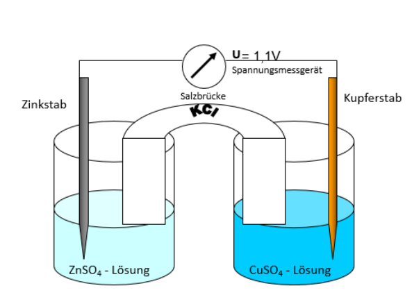

Das Daniell-Element ist eine galvanische Zelle und besteht aus zwei Halbzellen: Einer Zink-Halbzelle und einer Kupfer-Halbzelle. Sie sind durch eine Salzbrücke verbunden.

2) Beobachtungen
Am Zinkstab bilden sich Zinkionen und der Zinkstab löst sich langsam auf.
Am Kupferstab scheiden sich Kupferionen als festes Kupfer ab.
In der Salzbrücke findet ein Ionenfluss statt.
3) Fragestellungen
Wie funktioniert der Elektronenfluss im Daniell-Element?
Welche Rolle spielt die Salzbrücke?
Welche chemischen Prozesse laufen an den Elektroden ab?